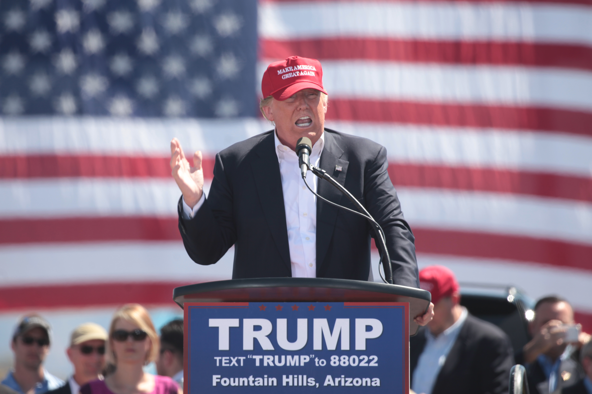

Trump - Les midterms · Le Ruban

Trump, 45em et 47em Président des USA face aux midterms. Le président américain, après des centaines d'action polémique durant ce premier mandat, a t'il à s'en faire ?
Pour commencer : c'est quoi les midterms ? Les midterms, c'est un évenement très important aux USA. Ces élections de mi mandat permettent de réélire les membres du Congré, du Sénat, et des Gouverneurs de certains États, qui sont les contre-pouvoirs majeurs du Président. Cela permet aussi de déterminer l'opinion publique : si les Démocrates gagnent ces élections en ayant plus de de sièges que les Républicains, ils pourront controler l'aspect Législatif des USA, et donc, bloquer Trump. Ça reflète aussi l'opinion publique ! Si jamais le peuple donne ses voix aux Démocrates, c'est qu'ils ne soutiennent plus Donald Trump (Républicain). En somme, ces élections (même si elles ne changent rien au mandat du Président) sont extrêment importantes aux USA. Le problème pour Trump, c'est qu'il n'est pas vraiment en bonne voie de les gagner.
L'opinion publique
Au début de son mandat, Donald Trump était quasiment adulé par les américains, mais maintenant ? Pour commencer, l'opinion publique peut être très fluctuante. Elle varie selon plusieurs critères, tel que les actualités, les polémiques, les actions de ses leaders, leur apparence... Une seule phrase mal comprise peut faire chuter la popularité de quelqu'un. Pourtant, celle de Donald Trump semblait avoir le vent en poupe au début de son mandat, tous semblaient l'admirer, mais qu'en est t'il, maintenant, après ses actions polémique à répétitions, ses actions controverses contre les migrants, l'idendité du genre, contre ses alliés, avec les droits de douanes, le rapprochement avec la Russie, et le délaissement de Zelensky ? Pour répondre à cette question, nous avons consulté Les Sondages ; Selon Ipsos (Sondage publié et commandé par le Washington Post et ABC News), à la date du 9 au 13 Octobre, 33% des américains (sondages fait auprès de 2545 adultes américains) approuveraient Donald Trump. Toujours selon Ipsos, à la date du 16 au 19 Octobre, (sondage effectué auprès de 1679 personnes), seulement 31% des gens approuveraient Donald Trump et ses action (sondage commandé et publié par Reuters). Selon YouGov (sondage commandé et publié par CBS News), aux dates du 21 au 23 Octobre, 39% des américains seraient favorable à Trump. YouGov donnera le même chiffre sur la période du 23 au 26 (dates du terrains) pour le sondage de The Economist (39% de favorables). Cependant, selon les sondages de SSRS et l'enquête de CNN, (publiée le 22 Octobre), seulement 32% des américains (adultes américains) approuveraient Donald J. Trump. Enfin, un dernier sondage publié par l'Ipsos (sur les dates du 22 au 26 Octobre) rapporterait quant à lui 32% de favorable à Donald J. Trump. Emerson College (terrain du 24 au 26 Octobre publié le 30) estime quant à lui 37% d'approbation auprès de 1000 électeurs. NPR PBS et Marist (résultat rapportés le 27 Octobre) estiment quant à eux 40% d'approbation. En moyenne, on estime 37% d'approbation contre 60% de désapprobation à Trump (New York Times). Des élements plus précis de l'administration Trump ont été sondé : la gestion de l'économie par l'Ipsos publié par Reuters (22-26 Octobre) indique 25% d'approbation pour la Gestion de l'économie et 20% pour la Gestion du coût de la vie. Toujours l'Ipsos publié par Reuters indique sur les dates du 16 au 19 Octobre 68% de désapprobation pour la Gestion de l'économie, et YouGov publié par The Economist sur les dates de terrain du 10 au 12 Octobre affiche 26% d'approbation de la Gestion de l'inflation contre 68% de désaprobation. Dans cette même enquête de YouGov, ils présentent aussi d'autres sujet politique. (Les résultat sont présentés en solde d'approbation soit approuve - désapprouve). Immigration : -13 points. Droit civiques : -21 points. Santé : -31 points. Iran : -31 points. Inflation : -42 points. En somme, l'opinion publique semble, aux dernière dates, plutôt défavorable à Trump, notamment sur le coût de la vie et les droits civiques.
Les controverses majeurs
Nous avons essayé. Nous avons voulu vous faire la liste détaillée de toutes les polémiques de Trump. Malheureusement, pour notre petite équipe journalistique, la tâche était ardue, sinon impossible, au vu du nombre de polémique par mois de trump, c'est pourquoi nous avons préféré vous condenser les polémiques majeures. Nous vous présentons nos sincères excuses. Mais voici les principales controverses de l'administration Trump : Pour commencer, l'immigration. La fameuse ICE américaine, qui a tiré sur des civils dans la rue, ou encore l'affaire Kilmar Abrego Garcia, ou, un résident permanent américain, qui aurait pu être en danger dans son ancien pays le El Salvador, a été expulsé justement vers... Le El Salvador, en toute illégalité. Une "erreur administrative" avait expliqué l'administration qui à promis son retour. Aussi, des migrants ont été reconnus, sans procès, membres de gangs parfois sans élements pour les expulser plus facilement en vertu de l'Alien Ennemies Act, une loi de 1789 prévue pour une situation de guerre permettant d'expulser du territoire des ennemis. En justice, des avocats ont été mis sous pressions et sanctionné par l'administration trump parce qu'ils mettaient leur nez dans des affaires que l'administration préférait visiblement garder sous clé. Des juges fédéraux ont levés certaines de ses sanctions, mais pas toutes. Nouvel exemple trumpesque de l'impartialité de la justice américaine. Ensuite, dans les université et écoles, le programme a été légérement changé : désormais, il ne faut plus parler de diversité des genres. Havard, qui avait refusé ces injonctions présidentielles, c'est vu gêlé un financement de 2,3 miliards de dollards par l'administration américaine. S'ensuivent ensuite les fameux droits de douanes exorbitants de Trump qui ont drastiquement fait monter le prix de la vie aux USA, la grâce présidentielle accordée à 1500 personnes coupables de l'attaque du capitole (pour contester la défaite de Donald Trump en 2021), et d'autres évenements simmillaires tel que le board of peace, un lieu de "paix" composé en grande partie de dirigeants de pays totalitaire, le fameux arcade.gov (site gouvernementale) qui contenait un jeu ou il fallait attraper les migrants tentant de passer le canal, ou encore les cartes de trump généré par IA ou le Groënland le Canada les antilles et le Mexiques appparaissaient sous un drapeau américain triomphant. Ou encore, le renomage du Golfe du Mexique en Golfe d'Amérique, ou encore plus récemment, l'insulte de Trump contre la Norvège parce que l'administration Nobel a refusée de donner le prix Nobel de la paix à un homme dont le pays est en guerre (guerre des USA contre l'Iran). Étonnant non ? : bref, la liste des griefs est longe, et ne pourrait être stockée intégralement ici.
Les perspectives électorales
En somme c'est quelques chose de décisif qui va se jouer aux USA : Si Trump perd ses élections au profit de ses adversaire politiques, l'administration fera face à de nouveaux contre pouvoir, contre Trump, et ses exactions. Si Trump ne remporte pas ces élections (ce qui au vu des sondages, à de grandes chance d'être le cas, bien que la réponse ne soit pas certaine), il pourrait vite se retrouver pied et poing lié. Seul l'avenir, nous dira quoi.
Conclusion
En conclusion, nous attendons avec impatience ces élections qui pourraient bien changer la face des USA et du second mandat de Trump, aux routes sinueuses. Le peuple américain applaudirait t'il encore aux paroles les plus insensiées de Trump (voir citation) ? Nous vous partagerons les résultats dès que disponible - l'affaire est encore à suivre ! Le Ruban vous remercie pour votre lecture et vous souhaite une bonne journée !
La Rédaction
« I could say the stupidest things and you’d clap. » - Je pourrais vous dire les choses les plus stupides qui soient et vous applaudiriez, Trump 10 octobre 2026
← Retour à la une